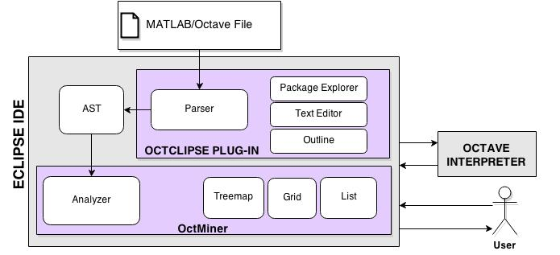
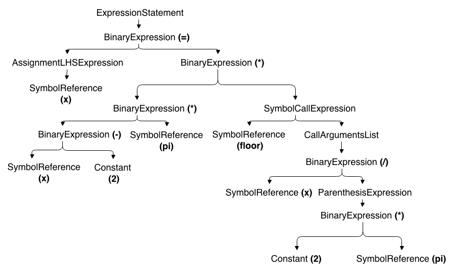
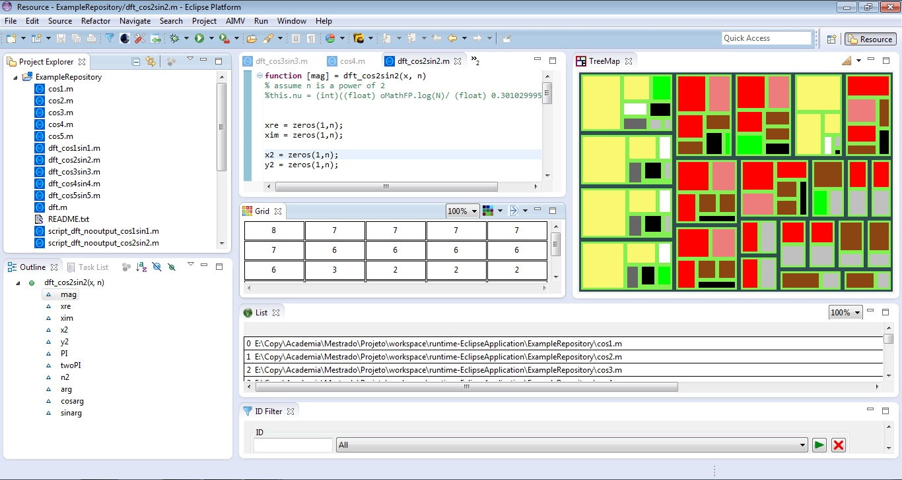
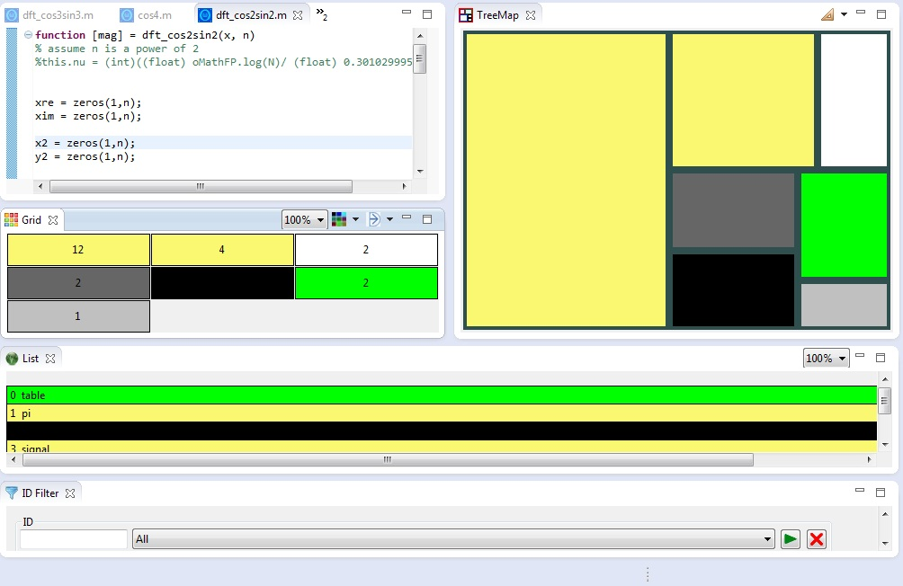
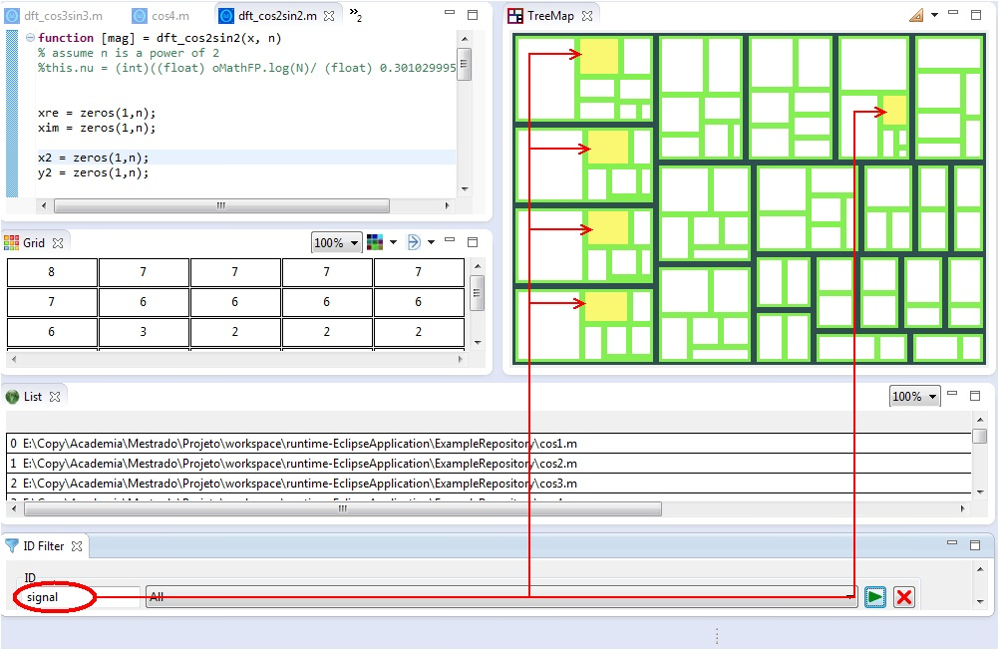
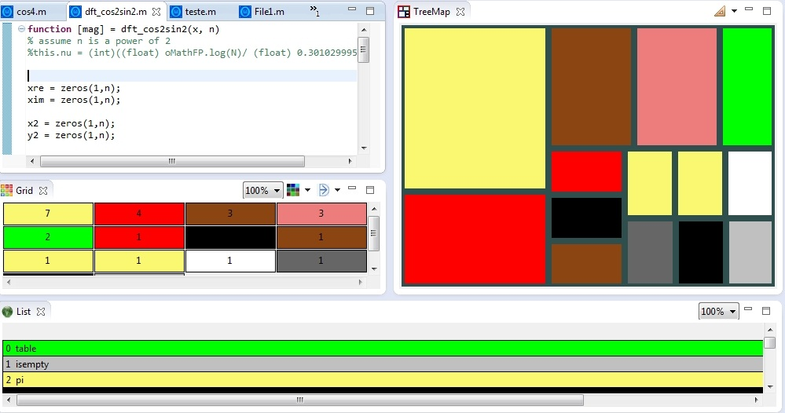
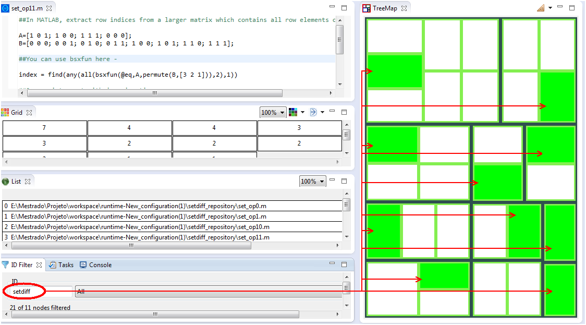
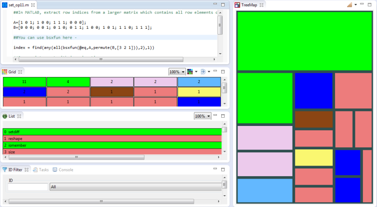
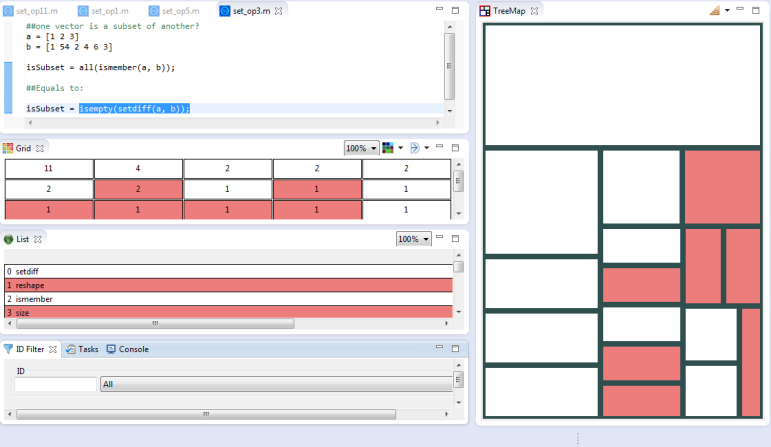

OctMiner: A Multiple View Environment for MATLAB and GNU/Octave
Program comprehension plays an important role in Software Engineering. In fact, many of the software lifecycle activities depend on program comprehension. Despite the importance of MATLAB and Octave programing languages in the Engineering and Statistical communities, little attention has been paid to the conception, implementation and characterization of tools and techniques for the comprehension of programs written in these languages. Considering this scenario, this paper presents a Multiple View Interactive Environment (MVIE) called OctMiner tailored to support the comprehension of programs in the aforementioned languages. OctMiner provides a set of coordinated visual metaphors that can be adjusted in accordance with programmers needs.
OctMiner Architectural Overview
Figure 1 depicts the main four elements of OctMiner: the Eclipse IDE RAP/RCP, the Octclipse plugin, the Octave interpreter and the MVIE toolkit. Considering that the Eclipse IDE enables its extension through the use of plugins, the MVIE toolkit uses this feature to provide its functionalities as well as to make possible the MVIE tailoring for the analysis of data from different domains, in this case the data gathered from MATLAB and Octave programs. To achieve this goal we implemented an Analyzer module as conveyed in Figure 1
|  |
{kind=link}
The Octclipse plugin converts data from the routine to the Abstract Syntax Tree (AST). From the AST provided by the Octclipse plugin we were able to develop a plugin to analyze the AST and to extract data from the routine in a format appropriated to feed the visual structures. The Octclipse plugin also provides an Octave development environment built upon Eclipse's Dynamic Languages Toolkit. This environment enables programmers to create Octave scripts (*.m files), edit them in a multi featured text editor, run the Octave interpreter, and see the result displayed in the IDE's console. The AST plays an important role in the context of OctMiner. In the AST, all data gathered from the routine is stored in a hierarchy structure. The following statement has its corresponding AST created by the Octclipse plugin depicted in figure below:
x = x-2 * pi * floor (x / (2*pi))
|  |
{kind=link}
As can be seen in Figure 2, the AST provides identifiers for each enclosed element, which are crucial to search the AST. For example, it enables finding out which parameter list a function receives. The AST also provides information about the location of the element in the routine. The Analyzer module gets the data set provided by the AST to feed the visual structures. To analyze the structure of statements such as the one presented in Figure 2, we considered the following definitions of each AST element: ExpressionStatement (declarations of a given expression); BinaryExpression (binary, arithmetic and equality operators); AssignmentLHSExpression (classifies the identifiers as variables); SymbolReference (usually a variable or function in the sentence); Constant; SymbolCallExpression (a function is called through the passage of parameters); CallArgumentList (the list of arguments that is passed for the function); ParenthesisExpression (indicates a parenthesis in the statement to define the precedence order). These definitions were considered to create the algorithm that parses the AST to obtain the elements to comprise the visual structure. Now we can decide about the views to make available for the comprehension of the routines of the two languages.
Views Example
| 
Figure 3 |

Figure 4 |
| 
Figure 5 |

Figure 6 |
| 
Figure 7 |

Figure 8 |
| 
Figure 9 |
{kind=link}
{kind=link}
{kind=link}
{kind=link}
Instalation and Manuals
Guide: Basic Instalation - Compressed version (Portuguese)
OctMiner: compressed version with a example Repository (for Win 32 or 64 bits)
Guide: Main Features (Portuguese)
Study 1: Using OctMiner to identify potential symptoms of tangling and scattering (Portuguese)